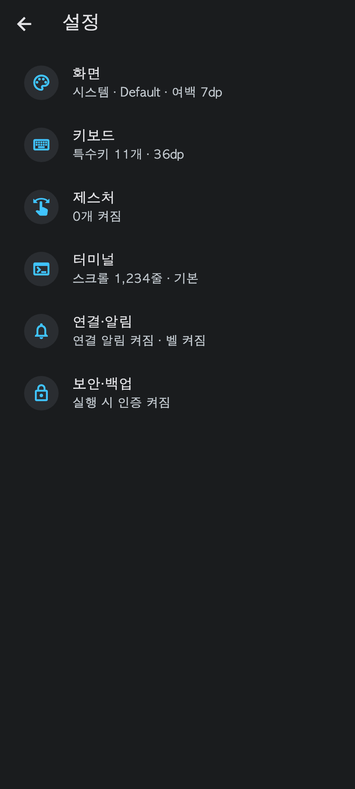
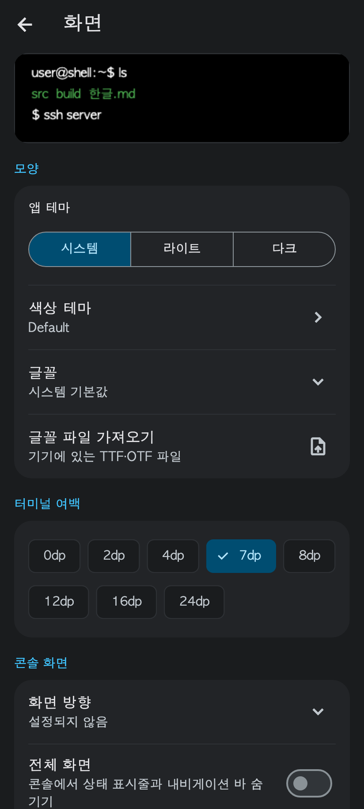
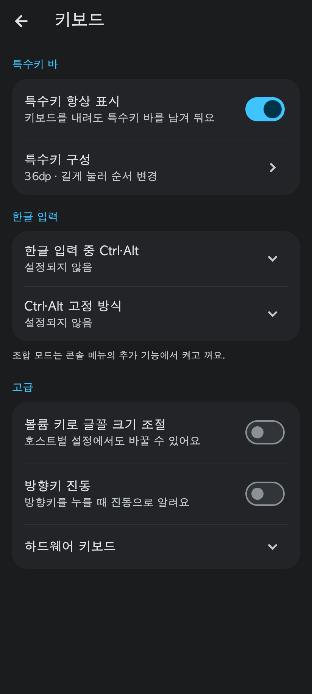
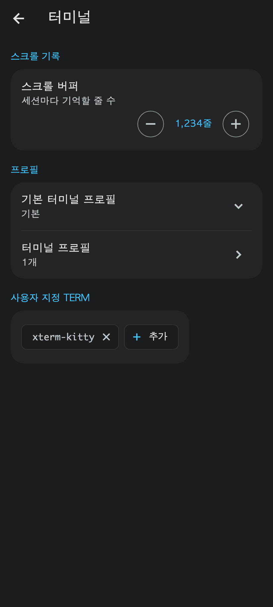
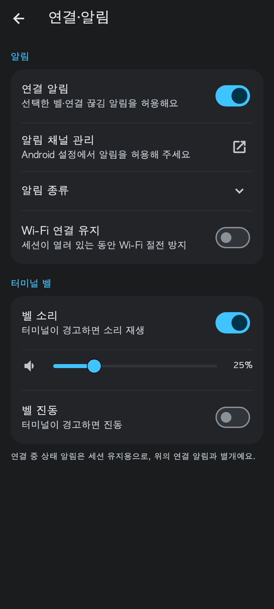
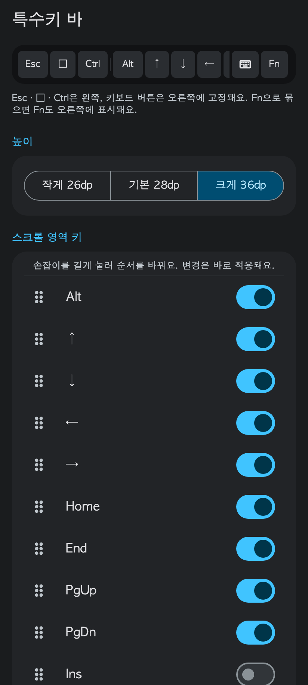
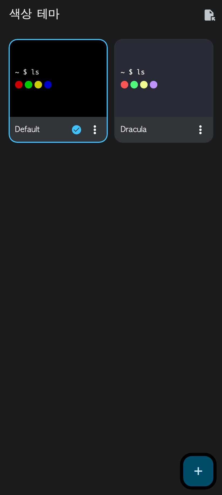
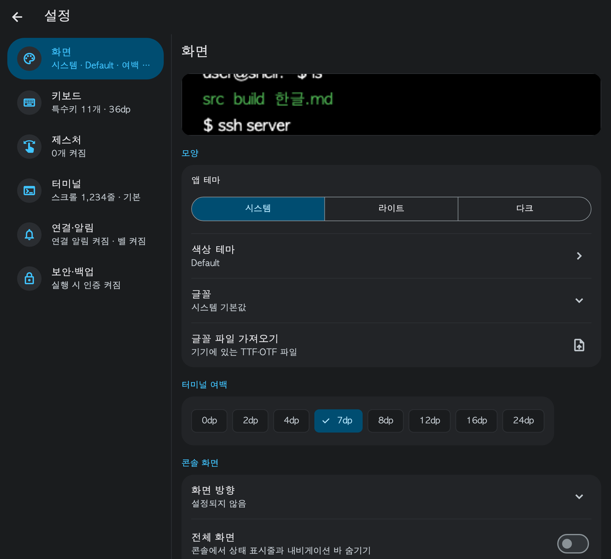

Android Shell · Flutter UI
연결을 중심에 두고, 설정은 쉽게 읽히게
사용자가 제공한 「Flutter 점검 예시」의 ‘고치면’을 기준으로 삼습니다. 아래 이미지는 구현한 Flutter 위젯을 예시 데이터와 검토용 글꼴로 렌더링한 시안입니다. 실제 기기 캡처가 아니며, 터미널 미리보기 이미지도 예시입니다.
화면 기준
연결 목록이 홈
저장된 호스트를 바로 보여 줍니다. 보조 명령은 호스트 메뉴에서 실행하고, 프로필과 색상·글꼴 관리는 설정에서 찾습니다.
현재 값이 먼저 보이게
설정 목록에 현재 상태를 요약합니다. 선택 항목은 라벨·현재 값·선택 시트로 통일하고, 스위치에는 필요한 짧은 설명을 붙입니다.
시각적 무게를 구분
중립색 아이콘 배경, 낮은 대비의 카드, 얇은 구분선을 사용합니다. 강조색은 선택 상태와 동작에 씁니다. 카드 안의 시작점과 오른쪽 제어 영역을 맞춥니다.
작은 화면과 큰 글자
좁은 화면에서는 목록과 상세를 오가고, 공간이 충분하면 나란히 보여 줍니다. 큰 글자에서는 선택 버튼을 세로로 배치하고 색상 카드를 넓힙니다. 기능을 가리는 잘림은 허용하지 않습니다.
특수키는 기존 동작 유지
고정 키와 스크롤 영역을 구분합니다. 미리보기에서 Fn 동작을 확인할 수 있고, 손잡이로 순서를 바꿉니다. 저장한 키 높이는 유지하며 변경만 즉시 반영합니다.
문구는 짧고 구체적으로
설명은 해요체로 쓰고 버튼에는 실행할 동작을 적습니다. 화면 켜짐 유지·방향키 진동·제목 표시줄 자동 숨기기처럼 실제 동작을 이름에 담습니다.
구현 시안








디자인을 바꿔도 보존할 동작
스크롤 기록과 여백은 화면을 여는 것만으로 값이 바뀌지 않습니다. 제안된 단계에 없는 값도 그대로 표시합니다. 숫자 검증은 입력창과 기존 엔진에서 수행합니다.
연결 알림을 켜거나 꺼도 벨·연결 끊김의 개별 선택은 유지합니다. 접힌 ‘알림 종류’에서 각각 조정할 수 있습니다.
특수키 변경이 실패하면 저장된 구성을 유지하고 오류를 보여 줍니다. 초기화는 확인을 거쳐 기존 엔진의 기본값을 사용합니다.
색상 테마 선택은 기본 터미널 프로필을 변경합니다. 별도 프로필을 쓰는 호스트 설정을 덮어쓰지 않습니다. 팔레트 편집·복제·가져오기·내보내기·이름 변경·삭제는 테마 메뉴에서 접근합니다. 글꼴 파일 관리와 Google Fonts 추가도 유지합니다.
구현 기준점
| 기준 | 소스 |
|---|---|
| 공통 색상과 표면 역할 | ConnectBotTheme · 공통 색상 |
| 섹션·간격·미리보기 | settingsSection · TerminalPreview · TerminalBarPreview |
| 설정 배치·선택·특수키 저장 | SettingsPage · TerminalBarPage |
| 특수키 기본값·허용 높이·순서 | TerminalBarLayout |
| 팔레트 선택과 편집 | SchemesPage · PalettePage |
| 콘솔 입력·인증·조합모드 | NativeTerminalView · ConsolePage |
| 제공된 점검 원본 | Flutter 점검 예시 (.dc 형식 원본) · 원본의 ‘현재’ 화면과 코드 제안은 참고 자료이며 위의 설정 보존 원칙을 우선합니다. |